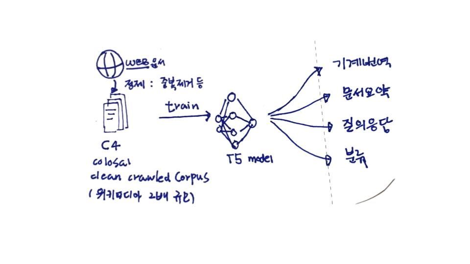
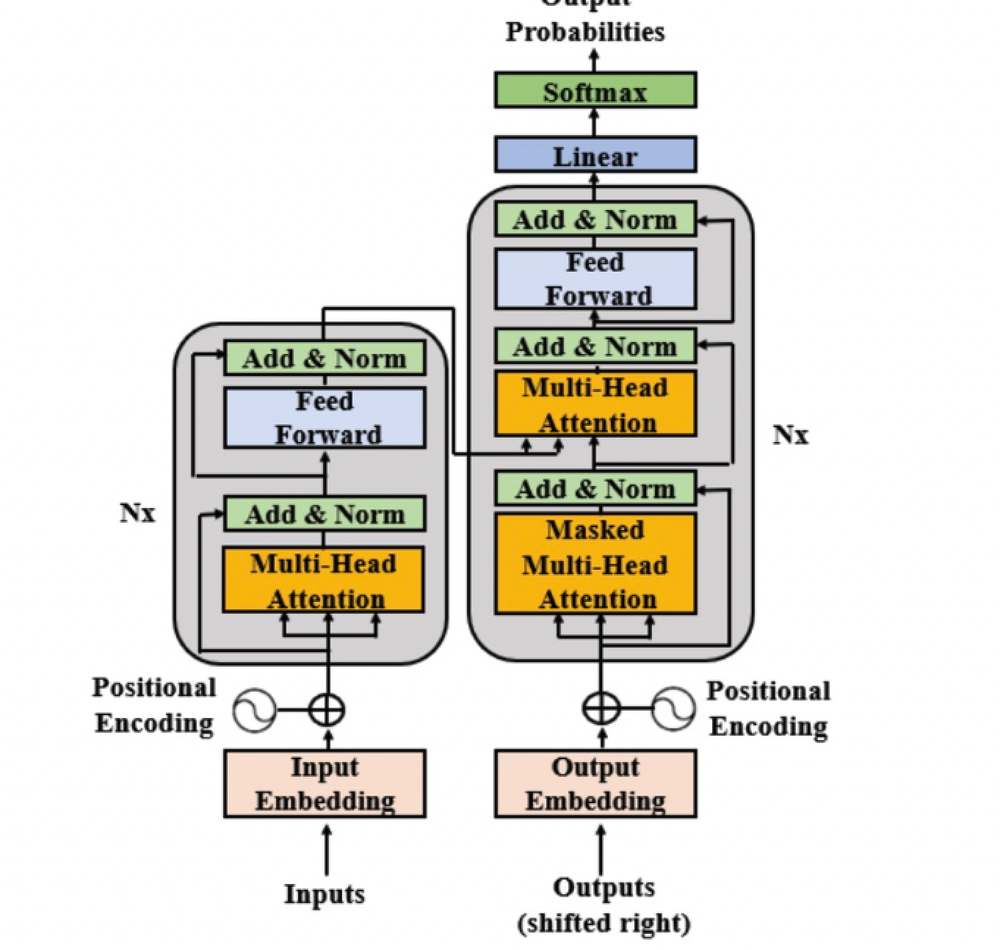

사전 훈련된 모델이 다운스트림 태스크로의 전이학습은 자연어처리의 강력한 기술로 부상했다. 전이학습 모델 중 T5모델에 살펴보고자 한다.
T5 모델 소개
T5[1]는 모든 텍스트 기반 언어 문제를 텍스트 대 텍스트 형식으로 변환하는 통합 프레임워크(unified framework)를 도입했다. 이 연구는 C4(Colossal Clean Crawled Corpus) 코퍼스를 결합하여, 요약, 질의응답, 분류 및 기타 문제에 대해서 최신 SOTA(state-of-the-art)를 달성했다.
사전 훈련된 모델이 다운스트림 태스크로의 전이학습은 자연어처리의 강력한 기술로 부상했다. T5는 모든 텍스트 기반 언어 문제를 텍스트 대 텍스트 형식으로 변환하는 통합 프레임워크(unified framework)를 도입했다. 이 연구는 C4(Colossal Clean Crawled Corpus) 코퍼스를 결합하여, 요약, 질의응답, 분류 및 기타 문제에 대해서 최신 SOTA(state-of-the-art)를 달성했다.
T5는 Raffel과 동료들(2019)이 개발한 모델이다. T5 모델은 표준 입력 포맷에 대한 텍스트 출력의 관점에서 설계 되었다. 구글 T5 팀은 BERT와 다른 새로운 아키텍처를 만들지 않았다. BERT는 인코더만이 있었고, GPT는 디코더 레이어만 있었는데, 이들을 합쳐 T5라는 형태의 아키텍처를 만들었다. 그들이 만든 T5를 이용한 트랜스퍼 모델은 다음과 같은 형태로 설계되었다.
위 모델에서 볼 수 있듯이 인코더와 디코더를 유지하고 있다. 인코더와 디코더는 블록(block)에 해당하고 , 인코더와 디코더 내부의 서브 컴포넌트(sub-components)에는 셀프 어텐션 레이어와 피드포워드 네트워크가 존재한다.
T5 모델 실습
T5 모델을 이용해 실습 하려면 Hugging Face's framework[2]를 이용해서 구현할 수 있다. t5-large 모델은 구글 Colaboratory에서 실행가능하다.
!pip install transformers==4.0.0
이후 sentence piece 라이브러리 0.1.94버전을 설치한다.
!pip install sentencepiece==0.1.94
이후 해당 모델의 상세 실습 방법은 [3] 문서를 확인한다.
관련 자료
- [1] Exploring the Limits of Transfer Learning with a Unified Text-to-Text Transformer, Raffel et al. (2019)
- [2] hugging face T5 모델 t5-large
- [3] hugging face t5 실습
- [4] google t5 깃헙
- [5] c4 dataset 소개